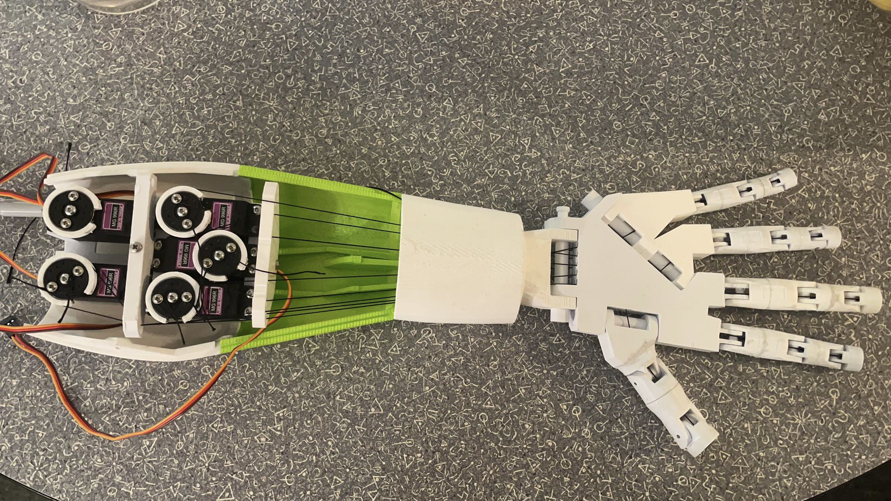

What is this project about?

Hi there, I'm a glove-controlled robot hand designed at Cornell by Jerry Jin, Caroline Huang, and Canwen Zhang.
My body is fully 3D printed and I can move all five of my fingers! My fingers are controlled by five servos in the
arm and I listen to the command from whoever is wearing the control glove:) Wanna know more about how I work? Please
read more from this website! Checkout a video of me
on YouTube .
You can also find my source code on Github.
A special acknowledgement for the open source robot building website inMoov and the tranceiver library written by AndyRids.